---
title: "The Application of Magnetic Susceptibility Separation for Measuring Cerebral Oxygenation in Preterm Neonates"
titlerunning: "CSVO2"
author:
- name: Thomas Gavin Carmichael
orcid: 0009-0008-6849-5333
corresponding: false
email: tgcarmichael@outlook.com
roles:
- writing - original draft
- formal analysis
- methodology
- validation
- visualization
affiliations:
- ref: 1
- ref: 2
degrees:
- HBSc
- name: Alexander Rauscher
orcid: 0000-0002-1961-8252
email: rauscher@physics.ubc.ca
corresponding: false
roles:
- writing - review & editing
affiliations:
- ref: 3
degrees:
- PhD
- MSc
- name: Ruth E Grunau
orcid: 0000-0002-5428-9212
corresponding: false
email: rgrunau@mail.ubc.ca
roles:
- writing - review & editing
- funding acquisition
affiliations:
- ref: 2
- ref: 3
- name: Alexander Mark Weber
orcid: 0000-0001-7295-0775
corresponding: true
email: aweber@bcchr.ca
roles:
- project administration
- supervision
- validation
- visualization
- resources
- methodology
- formal analysis
- funding acquisition
- writing - review & editing
- conceptualization
- data curation
- investigation
affiliations:
- ref: 2
- ref: 3
degrees:
- PhD
- MSc
affiliations:
- id: 1
name: The University of British Columbia
department: Integrated Sciences
address: 2329 West Mall
city: Vancouver
region: BC
country: Canada
postal-code: V6T 1Z4
- id: 3
name: The University of British Columbia
department: Pediatrics
address: 2329 West Mall
city: Vancouver
region: BC
country: Canada
postal-code: V6T 1Z4
- id: 2
department: BC Children's Hospital Research Institute
name: The University of British Columbia
address: 938 West 28th Avenue
city: Vancouver
state: BC
country: Canada
postal-code: V5Z 4H4
keywords:
- Quantitative Susceptbility Mapping
- Preterm
- Newborn
- Cerebral Venous Oxygen Saturation
abstract: |
**Background**: Quantitative susceptibility mapping (QSM) is a magnetic resonance imaging (MRI) modality proposed to be a viable method of measuring cerebral oxygenation in neonates given its sensitivity to deoxyhemoglobin, a paramagnetic molecule. During QSM, however, paramagnetic sources can be obscured by opposing diamagnetic sources such as water and myelin. We sought to evaluate whether QSM images alone, or an algorithm that attempts to isolate their paramagnetic components, are more accurate in measuring oxygenation of the major cerebral veins in a cohort of neonates born preterm. Additionally, we aimed to determine whether a difference in oxygenation existed between the major cerebral veins.
**Methods**: 19 neonates born preterm were scanned on a 3T research MRI at term equivalent age. The protocol included a multi-echo susceptibility-weighted imaging sequence. The acquired imaging data were processed as QSM images to obtain the susceptibility values of the superior sagittal sinus (SSS) and central cerebral veins (CCV). These values were used to calculate the oxygen saturation (SvO~2~) of the SSS and CCV. QSM images were subsequently processed to isolate their paramagnetic components. SvO~2~ values of the SSS and CCV were calculated again from the paramagnetic components.
**Results**: The mean SvO~2~ values of the SSS and CCV calculated from QSM images were found to be 72.4% (SD, 3.4%) and 68.7% (SD, 3.5%), respectively. The mean SvO~2~ values calculated from paramagnetic components were found to be 58.1% (SD, 7.3%) for the SSS and 57.7% (SD, 7.0%) for the CCV.
**Conclusion**: SSS SvO~2~ values derived from paramagnetic components agreed well with the existing literature and were closer than the values derived from QSM, however, they displayed greater variability. Although the CCV SvO~2~ data from QSM aligns more closely with existing literature, it is important to note that the current literature on this topic remains relatively limited in the CCV. Thus, decomposing QSM images into paramagnetic components shows great promise as a method for more accurately measuring cerebral oxygenation in neonates but may require more research to improve precision. Notably, no significant difference in oxygenation was observed between the CCV and the SSS, contrasting with previous studies.
plain-language-summary: |
key-points:
-
date: last-modified
bibliography: [ Gavin_Thesis_Ref.bib ]
citation:
container-title: Unpublished
number-sections: false
notebook-links: true
---
```{r setup, include=FALSE}
# options
knitr::opts_chunk$set(
# fig.width=8, fig.height=5,
# out.width="50%",
# fig.align="center",
echo=FALSE,
message=FALSE,
warning=FALSE
# cache=TRUE
)
set.seed(1234) # reproducible
options(knitr.kable.NA = '') # how kable handles NA
options(reticulate.repl.quiet = TRUE)
```
```{r libraries}
#libraries
library(tidyverse) # ggplot2, dplyr, tidyr, readr, purrr, tibble, stringr, forcats
theme_set( theme_minimal() ) # ggplot theme
library(broom) # for nice summaries
library(knitr) #
library(kableExtra) # more tables options. Can cause problems
library(Rmpfr)
library(gt)
# library(reticulate) # incorporate Python
# use_virtualenv('./pyvenv_csvo', required = TRUE) # load pythong venv from path
# library(neurobase)
```
```{r}
load("notebooks/results.RData")
```
```{r}
# function to make rounding means and sd easier
rndmean <- function(clm) {
return(round(mean(clm),2))
}
rndsd <- function(clm) {
return(round(sd(clm),2))
}
```
# Introduction {#sec-intro}
<!-- should be around 5-6 paragraphs. Aim for 460 words -->
Preterm birth
Abnormal brain development is a significant concern for parents with children born preterm, as 43% of infants that survive will have neurodevelopmental delays later in life [@dixMonitoringCerebralOxygenation2017]. Irregularities in early cerebral oxygen levels have been identified as a potential source of such delays, where too little oxygen provided during NICU care can result in white matter injury, while too much oxygen can result in reduced cortical connectivity [@rantakariEarlyOxygenLevels2021]. As such, being able to precisely, accurately, and non-invasively measure cerebral oxygenation is necessary for understanding and improving neurodevelopmental outcomes in preterm neonates.
In the present study, we set out to determine whether a QSM image alone, or the paramagnetic component of the QSM image, is more accurate in measuring the oxygen present in the major cerebral veins of a cohort of preterm neonates. As previous QSM studies have not included the SSS, we also had a secondary aim of preserving this vessel in our QSM images and using this data to determine whether a difference in oxygenation existed between the SSS and the central cerebral veins (CCV).
# Methods {#sec-data-methods}
The study was approved by the Clinical Research Ethics Board at the University of British Columbia and Children's & Women's Hospital (H21-00655) and written informed consent was obtained from the parent/guardian for each infant.
## Study population
Participant data comes from a previous study [@zhu-etal-cmro2]. Participants consisted of preterm neonates born between 25- and 31-weeks gestational age (GA) who were admitted to the level III NICU at BC Women’s Hospital. Recruitment took place over a span of one year, from February 2021 to January 2022, facilitated by a dedicated research nurse. Parents of eligible infants were approached by the research nurse prior to discharge from the NICU to explain the study objectives and seek their consent for participation. Infants meeting the criteria for inclusion were scanned for the study if they had already been discharged from the NICU, were in stable condition, and had reached a term equivalent age of 37 to 44 weeks GA. However, certain exclusion criteria were applied to ensure the homogeneity and integrity of the study sample. Infants were excluded if there was clinical evidence of a congenital malformation or syndrome, a TORCH infection, or ultrasound evidence of large parenchymal hemorrhagic infarction (\>2 cm, Grade 4 intraventricular hemorrhage).
## Image acquisition
MR imaging was performed on a 3.0 Tesla General Electric Discovery MR750 scanner (scanner software version DV26.0_R03) equipped with a SREE Medical Systems single-channel neonatal head coil (@tbl-mri). The scans were conducted at the BC Children’s MRI Research Facility. Prior to the scanning procedure, subjects were carefully prepared by a research nurse. Swaddling and feeding were used to ensure the comfort and cooperation of the subjects during the scan. Importantly, no sedatives or invasive markers were utilized throughout the procedure. Subjects were placed within a specially designed SREE Medical Systems MRI compatible incubator, which facilitated both safety and motion minimization. Molded foam was strategically positioned around the head and body within the incubator to further restrict subject movement. To protect against potential hearing damage, ear plugs were employed during the scanning process. Additionally, a pulse oximeter was affixed to the subject’s foot to monitor arterial oxygen saturation and heart rate throughout the scan.
```{r}
#| label: tbl-mri
#| tbl-cap: "Technical parameters for MR imaging pulse sequences"
df <- data.frame(Scan = character(), T1w = character(), T2w = character(), pcASL = character(), SWI = character(), stringsAsFactors = FALSE)
df[1,] <- c("Sequence", "3D FSPGR", "3D CUBE", "Multi-shot 3D fast spin-echo", "3D spoiled GRE flow-compensated")
df[2,] <- c("Phase-encoding direction", "Coronal", "Sagittal", "Axial", "Axial")
df[3,] <- c("TR (ms)", "7.74", "2,300", "4,680", "30.9")
df[4,] <- c("TE (ms)", "2.97", "66.29", "10.55", "5.24")
df[5,] <- c("Flip angle", "12\U00B0", "90\U00B0", "111\U00B0", "20\U00B0")
df[6,] <- c("FOV (cm)", "20", "20", "24", "25")
df[7,] <- c("Acquisition matrix", "512 x 512", "256 x 256", "128 x 128", "256 x 256")
df[8,] <- c("In-plane resolution (mm)", "0.39 x 0.39", "0.78 x 0.78", "1.875 x 1.875", "0.977 x 0.977")
df[9,] <- c("Slice thickness (mm)", "1", "1", "4", "2, reconstructed to 1 with zero filling (ZIP2)")
df[10,] <- c("Number of slices", "126", "106", "50", "92")
df[11,] <- c("Additional parameters", "n/a", "n/a", "1,450 ms label period;\n 2,025 ms pulse label;\n 24 control-label pairs", "n/a")
df[12,] <- c("Scan duration", "4 min 39 s", "5 min 1 s", "5 min 26 s", "5 min 29 s")
footnotetext="T1w = T1-weighted; T2w = T2-weighted; pcASL = pseudo-continuous arterial spin labelling; SWI = susceptibility weighted imaging; FSPG = fast spoiled gradient echo; CUBE = General Electric name of sequence, not an acronym; GRE = gradient echo; ZIP2 = through-plane zero filling interpolation"
if (knitr::is_latex_output()) {
colnames(df)[1] <- ""
df[11,] <- linebreak(df[11,])
df |>
kbl(format = "latex",
booktabs = TRUE,
longtable = TRUE,
linesep = "",
align = "l",
escape = FALSE) |>
kable_styling(font_size = 8, position = "center", latex_options = c("hold_position", "scale_down"), full_width = FALSE) |>
footnote(general_title = "",
footnote_as_chunk = TRUE,
threeparttable = TRUE,
general = footnotetext) |>
column_spec(1, width="8em") |>
column_spec(4, width="9em") |>
column_spec(5, width="9em")
} else {
df |>
mutate(across(everything(), ~ str_replace_all(., "\n", "<br>"))) |>
gt(rowname_col = "Scan") |> tab_footnote(footnotetext) |>
fmt_markdown(columns = TRUE) |>
tab_options(quarto.disable_processing = TRUE)
}
```
The MRI scan protocol comprised of the following sequences: a T1-weighted scan, a T2-weighted scan, a pseudo-continuous arterial spin labeling (ASL) scan, a multi-echo susceptibility-weighted imaging scan, and a diffusion-weighted imaging (DWI) spin-echo echo planar imaging (EPI) sequence. The DWI sequence was not used for the present study.
## Image analysis
The raw DICOM files acquired from the scanning procedure were converted to NIfTI (Neuroimaging Informatics Technology Initiative) format using Chris Rorden’s `dcmniix` tool. SWI magnitude data files were then used to create subject-specific brain masks that would not erode the SSS during QSM processing, an issue faced by our group in the past [@liFirstStepNeuroimaging2016]. A step-by-step summary of the pipeline used is shown in @fig-graph.
{{< embed notebooks/Figures.ipynb#fig-graph >}}
First, the fifth echo SWI magnitude file was processed using FSL’s (v. 6.0.7.3) [@woolrichBayesianAnalysisNeuroimaging2009] `fslroi`, `fslmaths`, and `bet` [@smithFastRobustAutomated2002] to create a preliminary brain mask, similar to our previous efforts, which does not contain the SSS. `Fslroi` was used to isolate the fifth echo of the magnitude data, which was then squared using Fslmaths and the option `-sqr`. Squaring the magnitude image was found to dramatically improve subsequent brain extraction. The resulting image was then used to create the preliminary brain mask using bet with the options `-m` and `-R`. The former flag generated a binary brain mask, while the latter performed a more robust brain centre estimation. The brain mask was then dilated by 7 voxels using `Fslmaths` and the options `-kernel boxv` and `-dilM` in order for the dilated mask to contain the SSS (along with unwanted tissue as well). This mask was then used, along with the phase images, in a MATLAB script for QSM calculation from Christian Kames [@kamesRapidTwostepDipole2018] to produce a preliminary QSM image that contained the SSS, albeit with fairly low signal-to-noise ratio and other unwanted tissue. Given the high contrast in voxel intensity between the SSS and surrounding tissue, the select by intensity tool in `FSLeyes` [@mccarthyFSLeyes2023] was then used to segment the SSS from the QSM image and create a 3D mask of the selected region. Using `fslmaths` and the options `-add` and `-bin`, the SSS mask was then combined with the original brain mask of the fifth echo. This resulted in a brain mask that contained only brain and SSS signal. Finally, this mask was used in a final QSM post-processing step to create a QSM image that includes the SSS while maintaining a high signal-to-noise ratio, making it suitable to obtain accurate susceptibility values.
STI Suite (v. 3.0) [@liIntegratedLaplacianBased2014], was used to process the final QSM images as it produced the cleanest images without eroding the SSS. The finalized brain mask and the last three echoes of the magnitude and phase images were used in STI Suite along with the following parameters: 0.9766 x 0.9766 x 1 mm^3^ voxel size, 5 ms TE1, 5.3 ms $\Delta$TE, and 77.4 ms sum TE, B0 strength = 3, and B0 direction = \[0, 0, 1\]. The 3D GRE data option was selected for the phase processing stage, and STAR-QSM was selected for the QSM stage. Finally, the \`select by intensity' tool in `FSLeyes` was then used to semi-automatically make vascular masks of the SSS and CCV from each subject’s QSM image. The vascular masks were used to calculate the mean susceptibility of each subject’s SSS and CCV from their QSM image with `fslstats`.
To isolate the paramagnetic component of subjects’ QSM data, the $\chi$-separation toolbox [@shinHseparationMagneticSusceptibility2021] from the Laboratory for Imaging Science and Technology was used. Each subject’s magnitude and phase SWI data were used along with the following parameters: 0.9766 x 0.9766 x 1 mm^3^ voxel size; TE (s) = \[0.005, 0.0102, 0.0155, 0.0207, 0.026\]; delta TE (s) = 0.0052; B0 strength = 3; B0 direction = \[0, 0, 1\]. The mean susceptibility of each subject’s SSS and CCV in their paramagnetic maps was calculated with the same vascular masks used for the QSM images. Sample images showing the magnitude, final QSM, and final paramagnetic component images are shown in @fig-sample.
{{< embed notebooks/Figures.ipynb#fig-sample >}}
Once the mean susceptibility values of the SSS and CCV were obtained from the subjects’ QSM images and paramagnetic maps, venous oxygen saturation (SvO~2~) was calculated with the following equation [@bergInvestigatingEffectFlow2021]:
$$
SvO_{2} = 1 - \frac{\Delta \chi _{blood} - (\Delta \chi _{oxy} * Hct)}{\Delta \chi _{do} * Hct}
$$ {#eq-svo}
where $\Delta \chi _{blood}$ is the vessel’s measured susceptibility, $\Delta \chi _{oxy}$ is the constant representing the susceptibility changes of oxygenated blood relation to water, $\Delta \chi _{do}$ is the difference in susceptibility between oxygenated and deoxygenated blood, and Hct is the subject’s hematocrit. $\Delta \chi _{oxy}$ was -0.21 \* 4$\pi$ ppm as per @portnoyHumanUmbilicalCord2018 and [@sedlacikObtainingBloodOxygenation2007], while $\Delta \chi _{do}$ was -0.03 \* 4$\pi$ ppm as per [@weisskoffMRISusceptometryImagebased1992]. Subjects’ Hct for the day of the scan was calculated using a four-parameter Weibull function with previously measured values while still in the NICU.
## Statistical analysis
Statistical analysis of the acquired data was performed using R and RStudio (v. 2023.09.1 Build 494) [@rcoreteamLanguageEnvironmentStatistical2022; @rstudioteamRStudioIntegratedDevelopment]. Mean and standard deviation values are reported for most statistics, unless specified otherwise. A paired Student's t-test was used to determine statistical significance (p \<0.05) between two parameters (e.g. $\chi$ values between venous structures).
<!-- the vessel-specific SvO2 values determined through QSM and those determined from the paramagnetic maps processed with $\chi$-separation. This was also performed for the raw $\chi$ values obtained through both methods. -->
# Results {#sec-results}
A total sample size of `r length(newdata$Subject)` infants were scanned, with a mean ($\pm$ standard deviation) gestational age of `r round(mean(newdata$GA),2)` $\pm$ `r round(sd(newdata$GA),2)` weeks and a mean birth weight of `r round(mean(newdata$BW),2)` $\pm$ `r round(sd(newdata$BW),2)` grams. A comprehensive summary of neonatal characteristics, including additional demographic and clinical data, is provided in @tbl-dem for reference.
```{r}
#| label: tbl-dem
#| tbl-cap: Demographic and clinical characteristic of the study sample.
df <- data.frame(Variable = character(), "Subject" = character(), stringsAsFactors = FALSE)
df[1,] <- c("Gestational age, weeks (mean \U00B1 SD)", paste0(rndmean(newdata$GA), " \U00B1 ", rndsd(newdata$GA)))
df[2,] <- c("Corrected gestational age on scan day, weeks (mean \U00B1 SD) ", paste0(rndmean(newdata$CGAonScanDay), " \U00B1 ", rndsd(newdata$CGAonScanDay)))
df[3,] <- c("Number of male neonates (\\%)", paste0(sum(newdata$Sex == "M"), " (", (round(sum(newdata$Sex == "M")/length(newdata$Sex)*100,2)), ")"))
df[4,] <- c("Birth weight, g (mean \U00B1 SD)", paste0(rndmean(newdata$BW), " \U00B1 ", rndsd(newdata$BW)))
df[5,] <- c("Weight on scan day, g (mean \U00B1 SD)", paste0(rndmean(newdata$Weight.on.Scan.Day..kg.*1000), " \U00B1 ", rndsd(newdata$Weight.on.Scan.Day..kg.*1000)))
df[6,] <- c("Days spent in NICU (median, IQR)", paste0(median(newdata$Total_Days_NICU), ", ", IQR(newdata$Total_Days_NICU)))
df[7,] <- c("Days on ventilation (median, IQR)", paste0(median(newdata$Total_Days_Ventilation), ", ", IQR(newdata$Total_Days_Ventilation)))
df <- df |> rename("Subject data (n = 19)" = Subject)
footnotetext="SD = standard deviation; IQR = inter quartile range"
if (knitr::is_latex_output()) {
df |>
kbl(format = "latex",
booktabs = TRUE,
longtable = TRUE,
linesep = "",
align = "lc",
escape = FALSE) |>
kable_styling(font_size = 9, position = "center", latex_options = c("hold_position", "scale_down"), full_width = FALSE) |>
footnote(general_title = "",
footnote_as_chunk = TRUE,
threeparttable = TRUE,
general = footnotetext)
} else {
df |>
mutate(across(everything(), ~ str_replace_all(., "\n", "<br>"))) |>
gt() |>
cols_align(align = "center", columns = c("Subject data (n = 19)")) |>
tab_footnote(footnotetext) |>
fmt_markdown(columns = TRUE) |>
tab_options(quarto.disable_processing = TRUE)
}
```
The mean SvO~2~ values for the SSS and the CCV were found to be `r rndmean(newdata$Gavin_SSSVein_CSvO2)` $\pm$ `r rndsd(newdata$Gavin_SSSVein_CSvO2)` and `r rndmean(newdata$Gavin_IntVein_CSvO2)` $\pm$ `r rndsd(newdata$Gavin_IntVein_CSvO2)` ppm, respectively, when determined from the QSM data. When determined from the paramagnetic map, the mean SvO~2~ values for the SSS and the CCV were found to be `r rndmean(newdata$Chisep_SSSVein_CSvO2)` $\pm$ `r rndsd(newdata$Chisep_IntVein_CSvO2)` %, respectively. A summary of the measured physiological parameters, including the chi values used to calculate SvO~2~, can found in @tbl-chistats.
```{r}
#| label: tbl-chistats
#| tbl-cap: Summary of acquired physiological parameters. Mean $\pm$ SD is shown for chi and SvO~2~ values. The P-value and 95% confidence interval (CI) were obtained through the comparison of values between QSM and paramagnetic maps; (n=19).
df <- data.frame(Region = character(), Measure = character(), QSM = character(), pmap = character(), pvalue = character(), CI = character(), stringsAsFactors = FALSE)
df[1,] <- c("SSS", "Chi (ppm)", paste0(rndmean(newdata$Gavin_SSS_Chi), " \U00B1 ", rndsd(newdata$Gavin_SSS_Chi)), paste0(rndmean(newdata$Chisep_SSS_Chi), " \U00B1 ", rndsd(newdata$Chisep_SSS_Chi)), signif(SSSChi.t$p.value,3), paste0(round(SSSChi.t$conf.low,2), ", ", round(SSSChi.t$conf.high,2)))
df[2,] <- c("SSS", "SvO\U2082 (\\%)", paste0(rndmean(newdata$Gavin_SSSVein_CSvO2*100), " \U00B1 ", rndsd(newdata$Gavin_SSSVein_CSvO2*100)), paste0(rndmean(newdata$Chisep_SSSVein_CSvO2*100), " \U00B1 ", rndsd(newdata$Chisep_SSSVein_CSvO2*100)), signif(SSSSvO2.t$p.value,3), paste0(round(SSSSvO2.t$conf.low,2), ", ", round(SSSSvO2.t$conf.high,2)))
df[3,] <- c("CCV", "Chi (ppm)", paste0(rndmean(newdata$Gavin_IntVein_Chi), " \U00B1 ", rndsd(newdata$Gavin_IntVein_Chi)), paste0(rndmean(newdata$Chisep_IntVein_Chi), " \U00B1 ", rndsd(newdata$Chisep_IntVein_Chi)), signif(CCVChi.t$p.value,3), paste0(round(CCVChi.t$conf.low,2), ", ", round(CCVChi.t$conf.high,2)))
df[4,] <- c("CCV", "SvO\U2082 (\\%)", paste0(rndmean(newdata$Gavin_IntVein_CSvO2*100), " \U00B1 ", rndsd(newdata$Gavin_IntVein_CSvO2*100)), paste0(rndmean(newdata$Chisep_IntVein_CSvO2*100), " \U00B1 ", rndsd(newdata$Chisep_IntVein_CSvO2*100)), signif(CCVSvO2.t$p.value,3), paste0(round(CCVSvO2.t$conf.low,2), ", ", round(CCVSvO2.t$conf.high,2)))
footnotetext="QSM = quantitative susceptibility mapping; CI = confidence interval; SSS = superior sagitall sinus; CCV = central cerebral vein"
if (knitr::is_latex_output()) {
df <- df |> rename("Paramagnetic map" = pmap, "p-value" = pvalue, "95\\\U0025 CI" = CI)
df |>
kbl(format = "latex",
booktabs = TRUE,
longtable = TRUE,
linesep = "",
align = "llcccc",
escape = FALSE) |>
kable_styling(font_size = 9, position = "center", latex_options = c("hold_position", "scale_down"), full_width = FALSE) |>
footnote(general_title = "",
footnote_as_chunk = TRUE,
threeparttable = TRUE,
general = footnotetext)
} else {
df <- df |> rename("Paramagnetic map" = pmap, "p-value" = pvalue, "95\U0025 CI" = CI)
df |>
mutate(across(everything(), ~ str_replace_all(., "\n", "<br>"))) |>
gt() |>
cols_align(align = "center", columns = c("QSM", "Paramagnetic map", "p-value", "95\U0025 CI")) |>
tab_footnote(footnotetext) |>
fmt_markdown(columns = TRUE) |>
tab_options(quarto.disable_processing = TRUE)
}
```
Region-specific $\chi$ and SvO~2~ values acquired from QSM were compared to values acquired from paramagnetic maps. In both the SSS and CCV, it was found that a significant difference existed between values acquired ($\chi$ and SvO~2~) from QSM and paramagnetic maps (p < 0.05). A boxplot showing the comparisons made is shown in @fig-methodplot.
{{< embed notebooks/gavin_thesis_markdown.qmd#fig-methodplot >}}
The acquired $\chi$ and SvO~2~ values were additionally compared between veins. In data created from QSM, a significant difference was found between the CCV and SSS in mean $\chi$ (p < 0.05; 95% CI [`r round(RegionQSMChi.t$conf.low,3)`, `r round(RegionQSMChi.t$conf.high,3)`]) and mean SvO~2~ (p < 0.05; 95% CI [`r round(RegionQSMSvO2.t$conf.low,3)`, `r round(RegionQSMSvO2.t$conf.high,3)`]). In data acquired from paramagnetic maps, no significant difference was observed between the CCV and the SSS in either mean $\chi$ (p = `r round(RegionChisepChi.t$p.value,3)`; 95% CI [`r round(RegionChisepChi.t$conf.low,3)`, `r round(RegionChisepChi.t$conf.high,3)`]) or mean SvO~2~ (p = `r round(RegionChisepSvO2.t$p.value,3)`; 95% CI [`r round(RegionChisepSvO2.t$conf.low,3)`, `r round(RegionChisepChi.t$conf.high,3)`]). A summary of these comparisons is represented in @fig-regionplot.
{{< embed notebooks/gavin_thesis_markdown.qmd#fig-regionplot >}}
# Discussion {#sec-discussion}
The primary objective of the present study was to assess whether the application of magnetic susceptibility separation to neonatal QSM data could provide more accurate cerebral venous vessel oxygenation measurements. To the best of our knowledge, we are the first to test this in a neonatal cohort, as susceptibility separation has been typically evaluated as a method of imaging myelin and brain iron in adult subjects [@shinHseparationMagneticSusceptibility2021; @ahmedDiamagneticComponentMap2023a]. Our results showed that the SvO~2~ values of the SSS and CCV obtained from susceptibility separation are significantly lower than the respective SvO~2~ values obtained from QSM alone. When our results were compared to the literature, we found that our SSS SvO~2~ data from susceptibility separation agreed well with the findings of other studies measuring SvO~2~ of the SSS in similar subject populations. Conversely, the paramagnetic CCV SvO~2~ data saw less agreement with the existing literature than the corresponding data from QSM. However, there is reason to believe our paramagnetic CCV values may be accurate given their similarity to the paramagnetic SSS values and the limitations of the two studies that observed CCV SvO~2~. Additionally, it is important to note that our SvO~2~ measurements from susceptibility separation had greater variance than our measurements from QSM, indicating a limitation that should be addressed in future research. Overall, the present work demonstrates the promise of susceptibility separation as an MRI post-processing technique that can measure the oxygenation of the cerebral veins of infant subjects, a useful marker of regional oxygen consumption in the brain.
# Conclusion {#sec-conclusion}
# References {.unnumbered}
::: {#refs}
:::Reproducible Manuscripts
Alexander Mark Weber
Bridge-In
Mentimeter
Scientific Method
Scientific Method
What is the scientific method (broadly)?
- Define a question
- Gather information and resources (observe)
- Form an explanatory hypothesis
- Test the hypothesis by performing an experiment and collecting data in a reproducible manner
- Analyze the data
- Interpret the data and draw conclusions that serve as a starting point for a new hypothesis
Publish results
Retest (frequently done by other scientists)
Scientific Method
- Publish Results
- Retest (frequently done by other scientists)
Problem
- In 2011, John Ioannidis1 published 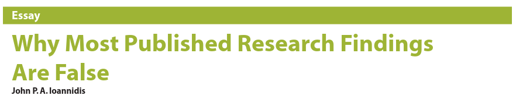
- Why?
- Studies are underpowered
- Current incentives lead scientists to publish quantity over quality
- No incentives for scientists to replicate other studies
- More…
Problem
Was he right?
- In 2015, the Open Science Collaboration sampled studies from prominent journals to estimate the replicability of psychological research.2
Problem
Problem
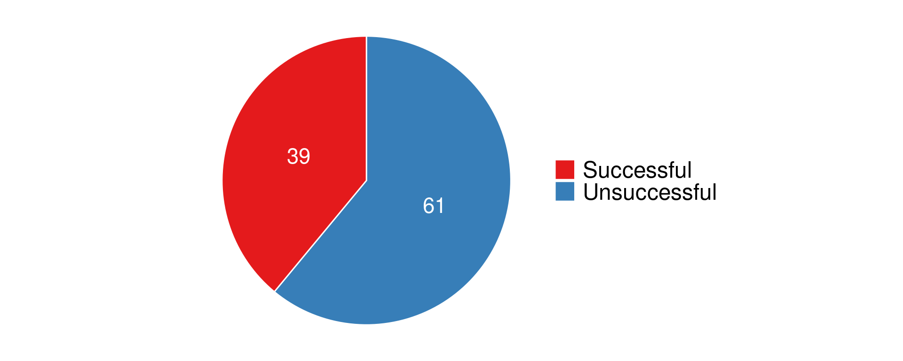
Problem
Not just in Psychology:
Problem
For clinical trials: 44% contained at least some flawed data:
- impossible statistics,
- incorrect calculations,
- or duplicated numbers or figures
Publishing irreproducible results is worse than not publishing: more difficult to eliminate an idea than it is to introduce it10
Spurious results can mislead other researchers who conduct follow-up investigations or try to integrate findings into broader theories.
What Can We Do?
Many solutions are needed; far outside the scope of this talk
One thing we can do is change the way we write papers. 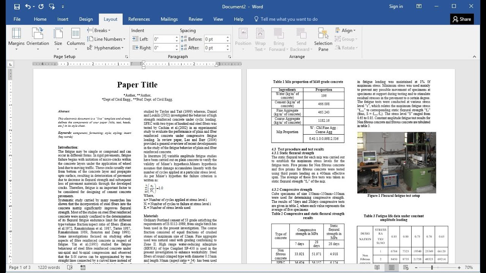
Currently, papers are written and published in a way that results in errors and the inability to computationally reproduce results.
What Can We Do?
- Errors: a 2016 paper by Nuijten et al.11 found that
- nearly half of all papers had errors in them;
- over 10% of p-values in published papers were inconsistent with the reported details of the statistical test
- 1.6% were what they called “grossly” inconsistent, e.g. difference between the p-value and the test statistic meant that one implied statistical significance and the other did not
What Can We Do?
- Computational reproducibility: a 2021 paper by Hardwicke et al.12 attempted to reproduce results from 25 published papers that publicly shared their data and code:
- found substantial numerical discrepancies between reported statistical values and values obtained from reproduction attempts in 64% of these papers
What Can We Do?
This is where Reproducible Papers come in…

Learning Goals
Learning Goals
By the end of the talk, the audience should: - Know what a reproducible manuscript is, - Understand some reasons why scientists should be writing their manuscripts this way, - Know what Markdown, Knitr, Pandoc, LaTeX, Jupyter Notebook, R/RMarkdown, and Quarto are, - Know the basics of the syntax for Markdown, R and Quarto are, - See how to integrate author information, code, equations, tables, images, and citations - Be able to start writing your next manuscript using Quarto Manuscripts, and convert to any format you wish (html, pdf, docx), including converting to paper-specific formatting.
Introduction
What is a reproducible manuscript?
- Reports the scientific findings
- Provides all (or almost all) the necessary data, code, and methodologies required to create those findings (i.e. data, stats, figures, tables, etc.)
- Transparent and organized
- Enables others to replicate and verify the results of your study independently

What does it look like?
What are some other benefits?
- Already mentioned:
- reducing errors from copy-pasting results to paper
- anyone can see how I obtained my results or figures by reviewing my code (bonus: learn how others made their figures!)
- Easy to restructure, rewrite, revise:
- no need to tweak reported values, tables, or figures by hand
- remove barrier to re-running analyses (thanks to Reviewer #2); speed up resubmission
What are some other benefits?
- easy cross-referencing and citations
- allow for more rigorous meta-analyses studies to be performed (raw-data)
- be authored in your favorite code editor
- render from qmd to PDF, Word, HTML, \(\LaTeX{}\), etc.
- execute code in R, Python, Julia, and more
- apply journal styles to your outputs with Quarto extensions
- publish to Github Pages, Netlify, and more
Notebooks: an Aside
Aside: What is a notebook?
A notebook is a document that contains both code and narrative:
- Jupyter notebooks (.ipynb)

Aside: What is a notebook?
A notebook is a document that contains both code and narrative:
- Rmarkdown (.rmd)


Aside: What is a notebook?
A notebook is a document that contains both code and narrative:
- Quarto document (.qmd)


Aside: What are notebooks good for?
By combining narrative with code, researchers can share and explain what they did, how they did it, and why they did it.
Kind of like a research paper but with all the data, stats and computation baked in.
Great for teaching, communicating, and/or collaborating: where you can directly see what someone did, with helpful explanations along the way.
Aside: Quick intro to R Markdown
Some markdown syntax

Aside: Quick intro to R Markdown
Markdown with evaluated code
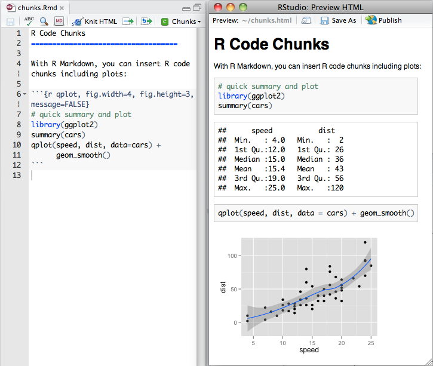Aside: Quick intro to R Markdown
You can also include code inline (mixed in with the markdown text)

Overview of Quarto Manuscript
Project Files
index.qmd: a notebook file where you write your article. This file contains:- document metadata, including article front matter (authors, affiliations, etc.) and Quarto options,
- the article body, written using special Quarto markdown syntax that allows you to add things like cross references and citations, and
- optionally, code, where you control if, or how, the code and its output appear in the article.
Project Files
_quarto.yml: a configuration file that identifies the project as a Quarto manuscript and controls how your manuscript is put together.
project:
type: manuscript
execute:
freeze: auto
format:
html:
toc: true
comments:
hypothesis: true
docx: default
jats: default
nature-pdf:
journal: "sn-nature"
keep_tex: trueindex.qmd
The file index.qmd is a Quarto markdown file. It contains three types of content:
- Starts with a YAML header, used to set document metadata, including scholarly front matter. The YAML header starts and ends with a line of three dashes (
---)
index.qmd
YAML header:
---
title: La Palma Earthquakes
author:
- name: Steve Purves
orcid: 0000-0002-0760-5497
corresponding: true
email: steve@curvenote.com
roles:
- Investigation
- Project administration
- Software
- Visualization
affiliations:
- Curvenote
- name: Rowan Cockett
orcid: 0000-0002-7859-8394
corresponding: false
roles: []
affiliations:
- Curvenote
license: CC BY-SA 4.0
keywords:
- La Palma
- Earthquakes
date: '2022-05-11'
abstract: |
In September 2021, a significant jump in seismic activity on the island of La Palma (Canary Islands, Spain) signaled the start of a volcanic crisis that still continues at the time of writing. Earthquake data is continually collected and published by the Instituto Geográphico Nacional (IGN). We have created an accessible dataset from this and completed preliminary data analysis which shows seismicity originating at two distinct depths, consistent with the model of a two reservoir system feeding the currently very active volcano.
keypoints:
- You may specify 1 to 3 keypoints for this PDF template
- These keypoints are complete sentences and less than or equal to 140 characters
- 'They are specific to this PDF template, so they will not appear in other exports'
citation:
container-title: Notebooks Now!
draft: false
bibliography: references.bib
echo: false
---index.qmd
index.qmdbody may include executable code chunks: start with three backticks followed by the code language in curly braces (e.g.```{r}or```{python}).The rest of the document interpreted as Quarto specific markdown, allowing you to include figures, tables, equations, cross references and citations.
figures
{fig-elephant}
- Can be cross referenced with
@fig-elephantin the document
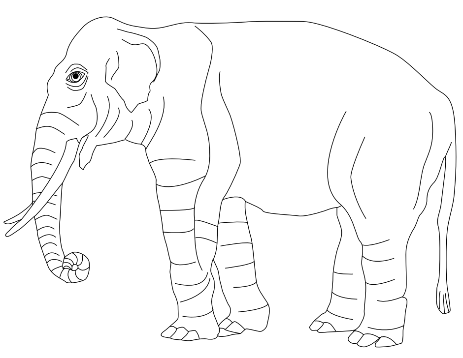
figures
- Can also be created using
RorPython
```python
#| label: fig-plot
#| fig-cap: "Plot"
import matplotlib.pyplot as plt
plt.plot([1,23,2,4])
plt.show()
```
For example, see @fig-plot.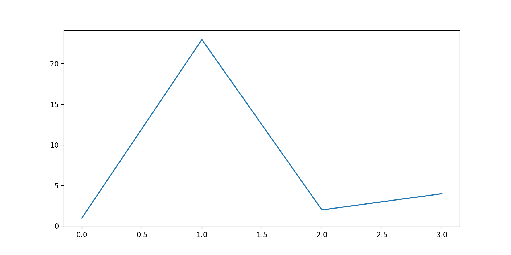
figures
Can also embed from a
.qmdor.ipynbfile:
{{< embed mycode.ipynb#fig-plot >}}Which itself contains something like:
```python
#| label: fig-plot
#| fig-cap: "Plot"
import matplotlib.pyplot as plt
plt.plot([1,23,2,4])
plt.show()
```tables
This is probably the most complex elemant of Quarto
Easiest way is using markdown pipes:
| Default | Left | Right | Center |
|---------|:-----|------:|:------:|
| 12 | 12 | 12 | 12 |
| 123 | 123 | 123 | 123 |
| 1 | 1 | 1 | 1 |
: Demonstration of pipe table syntax {#tbl-numbers}| Default | Left | Right | Center |
|---|---|---|---|
| 12 | 12 | 12 | 12 |
| 123 | 123 | 123 | 123 |
| 1 | 1 | 1 | 1 |
tables
- You can also write your table in
RorPython
#| label: tbl-planets
#| tbl-cap: Astronomical object
from IPython.display import Markdown
from tabulate import tabulate
table = [["Sun","696,000",1.989e30],
["Earth","6,371",5.972e24],
["Moon","1,737",7.34e22],
["Mars","3,390",6.39e23]]
Markdown(tabulate(
table,
headers=["Astronomical object","R (km)", "mass (kg)"]
))
tables
- Can also write tables in \(\LaTeX{}\)
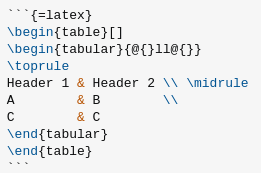
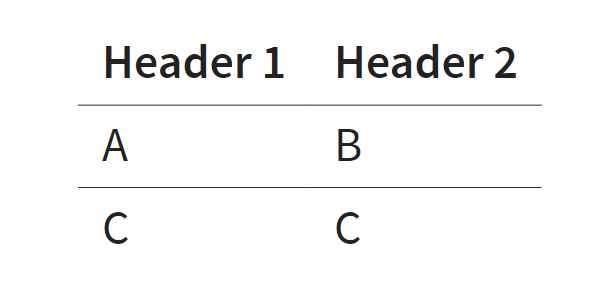
references
References can be accomplished using a
.bibfileHere is an example:
@article{ahmedDiamagneticComponentMap2023a,
title = {The Diamagnetic Component Map from Quantitative Susceptibility Mapping ({{QSM}}) Source Separation Reveals Pathological Alteration in {{Alzheimer}}'s Disease-Driven Neurodegeneration},
author = {Ahmed, Maruf and Chen, Jingjia and Arani, Arvin and Senjem, Matthew L. and Cogswell, Petrice M. and Jack, Clifford R. and Liu, Chunlei},
year = {2023},
month = oct,
journal = {NeuroImage},
volume = {280},
pages = {120357},
issn = {1095-9572},
doi = {10.1016/j.neuroimage.2023.120357},
langid = {english},
pmid = {37661080},
keywords = {Alzheimer Disease,Alzheimer's disease,Brain,Cerebral Cortex,DECOMPOSE,Demyelination,Disease Progression,Gray Matter,Humans,Magnetic susceptibility,Neurodegeneration,Quantitative susceptibility mapping}
}- referenced in the document with
@ahmedDiamagneticComponentMap2023a
in-line code
You can also mix text with in-line code, in order to reference variables
For example:
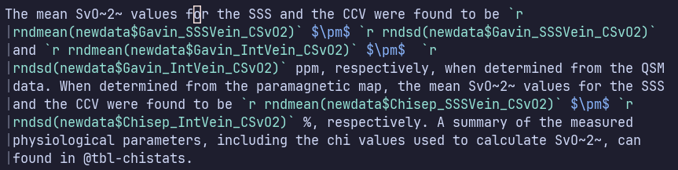
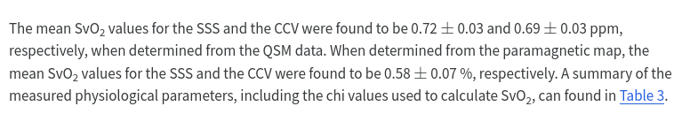
Simple Demonstration with Quarto
Let’s write a manuscript
First, install quarto https://quarto.org/docs/download/prerelease.html
Approach 1: Start from scratch
- Creating a Quarto manuscript
- RStudio: New Project > New Directory > Quarto Manuscript
quarto create project manuscript <name>
- Add manuscript content
- Creating a Quarto manuscript
Approach 2: Start with a sample from https://quarto.org/docs/manuscripts
Let’s write a manuscript
We will then need to decide what tool we will use:

Today I will use RStudio as an example

Let’s write a manuscript
- Clone the Template Repository
Let’s write a manuscript
- Once your repository is created, clone it to your local computer.
- In RStudio, you can do: File > New Project.
- In the New Project dialog, select From Version Control, then Git, and copy and paste the repo URL from GitHub.


Workflow
The basic workflow for writing a manuscript in Quarto is to make changes to your article content in
index.qmd, preview the changes with Quarto, and repeat.Render and preview the manuscript by hitting the Render button located in the menu bar of the editor (RStudio in this case):


Let’s write a manuscript
You’ll see some output from Quarto in the Background Jobs pane and then a live preview will appear in the Viewer pane.

Let’s write a manuscript
What does Render do?
knitr executes the code chunks and creates a new markdown (
.md) document, which includes the code and its outputthe
.mdfile is then processed by pandoc, which translates markdown/HTML/\(\LaTeX{}\) into various output formats
Let’s write a manuscript
Open RStudio
Real life demonstration
Open Neovim
What’s Next?
Collaborating
Most people will be happy to use the
.docxand track changesOthers may wish to publish their page on Github and use the annotation tool 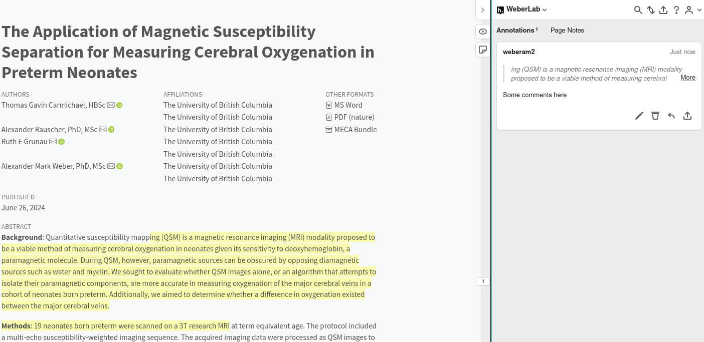
Collaborating
- Brave souls may wish to make changes to the
.texfile and track changes with

Publishing
Journal will usually want the file in
.docx, sometimes they accept.tex, and rarely they will take.pdffor reviewing and then require the.docxor.texfileBut
.pdfs are static… how will people be able to see your source code?Publish your HTML manuscript on Github (or other alternatives) and cite your page, perhaps in the Data Availability section
Can add a binder using
quarto use binderand includingcode-links: binderin your_quarto.ymlfile
Publishing
Criticisms
What are some barriers?
- Conversion to different outputs is not always straightforward, and sometimes may not be possible to replicate what you want
- Steep learning curve
- No career incentive to try this new approach
- Slow to preview/render
- Errors/bugs can be frustrating
- Getting complex tables to work in HTML and \(\LaTeX{}\)
What are some criticisms?
- “But people will take my analysis, run it another way, and say my results aren’t valid”
- “This looks hard, I don’t want to have to learn another new thing”
What are some criticisms?
Resources
Summary
Summary
Thank you
<>
Footnotes
Ioannidis JPA (2005) Why most published research findings are false. PLoS Med 2(8): e124.
Open Science Collaboration. Estimating the reproducibility of psychological science. Science 349, aac4716 (2015).
Farrar, B. G., Boeckle, M. & Clayton, N. S. Replications in comparative cognition: what should we expect and how can we improve? Anim. Behav. Cognit. 7, 1 (2020).
Errington, T. M. et al. Investigating the replicability of preclinical cancer biology. Elife 10, e71601 (2021).
Camerer, C. F. et al. Evaluating replicability of laboratory experiments in economics. Science 351, 1433–1436 (2016).
Begley CG, Ellis LM (2012) Drug development: Raise standards for preclinical cancer research. Nature 483: 531–533. doi: 10.1038/483531a PMID: 22460880
K.S. Button, J.P.A. Ioannidis, C. Mokrysz, B.A. Nosek, J. Flint, E.S.J. Robinson, M.R. Munafò. Power failure: Why small sample size undermines the reliability of neuroscience. Nat Rev Neurosci, 14 (2013), pp. 365-376
Marek, S., Tervo-Clemmens, B., Calabro, F.J. et al. Reproducible brain-wide association studies require thousands of individuals. Nature 603, 654–660 (2022). https://doi.org/10.1038/s41586-022-04492-9
Carlisle, J. B. Anaesthesia 76, 472–479 (2021).
C. Piller. Disgraced COVID-19 studies are still routinely cited. Science, 371 (2021), pp. 331-332; E.M. Bucci. On zombie papers. Cell Death Dis, 10 (2019), p. 189; S.B. Nissen, T. Magidson, K. Gross, C.T. Bergstrom. Publication bias and the canonization of false facts. eLife, 5 (2016), Article e21451
Nuijten, Michèle B, Chris HJ Hartgerink, Marcel ALM van Assen, Sacha Epskamp, and Jelte M Wicherts. 2016. “The Prevalence of Statistical Reporting Errors in Psychology (1985–2013).” Behavior Research Methods 48 (4). Springer: 1205–26.
T.E. Hardwicke, M. Bohn, K. MacDonald, E. Hembacher, M.B. Nuijten, B.N. Peloquin, et al. Analytic reproducibility in articles receiving open data badges at the journal Psychological Science: An observational study. R Soc Open Sci, 8 (2021), Article 201494